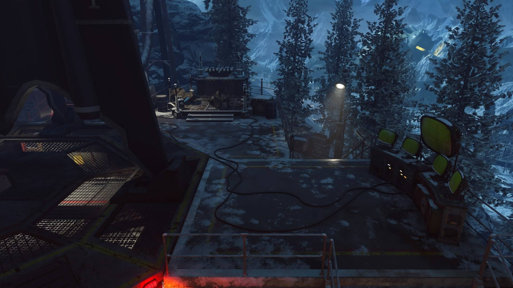

Black Ops 3 > Der Eisendrache
My Brother's Keeper
By Kreeholo lu Kreemasaleet - Jun/12/2018
'My Brother's Keeper', the Easter Egg for Der Eisendrache, is regarded as the easiest easter egg in Black Ops 3, but it still takes some effort. This guide will take you through the necessary steps to complete the egg.
First, one bow must be upgraded per player. For example, if there is one player in the game, only one bow must be upgraded, and if there are three players in the game, three bows must be upgraded. In a non-ranked private game, however, all bows must be upgraded. The Ragnarok DG4 must also be built, and the Death Ray must be used at least once.
To begin the easter egg, a player must shoot the top of the
teleporter with the unupgraded Wrath of the Ancients,
turning the ends orange and making a growling sound when
all have been shot. Once this is done, a wisp will spawn in
one of eight set locations, which will need to be shot four
times with an upgraded bow within a limited amount of time.
After each wisp is shot, a new one will appear, without
repeating locations. If the wisp is not shot in time or
shot with an unupgraded bow, an alarm will sound,
signifying the failure, and you must retry the next round.
The locations for the wisps are:
- Phone in the small office with Quick Revive.
- Truck tire near Double Tap II.
- Box near work bench above Double Tap on the way to the Wundersphere.
- Globe in the small room beside Samantha's room.
- Phone on pillar near power switch, same pillar as the Bowie Knife, but opposite side.
- Clock in the hallway connecting the Clock Tower (Radio Room) and Church (Mission Control), referred to as the Barracks.
- Radio in the adjacent corner from Speed Cola inside the Church (the one close to the entrance)
- Clock above fireplace in the Church (Mission Control)
Once the wisps have all been shot, signified by a sound cue, all players must return to the teleporter, which is now glowing purple, to teleport to the past. Here, players are unable to use their weapons, but don't worry. No zombies spawn here, and all that happens is Dr. Groph talking to Richtofen and using a safe. Two objects must be picked up here: a large blue canister to the left, and some fuses to the right. The three symbol code Dr. Groph enters into the safe must also be remembered. After returning to the present, the Death Ray must be interacted with to put the fuses into it, and the lever on the other side must be flipped from "Destroy" to "Protect". The code from the past must now be entered in the terminal near the clock tower, opening the safe in the teleporter room, where larger fuses and a keycard are picked up. These steps from shooting the wisps to here must be done in the same round, and must be restarted in the next round if failed.
Return to the Death Ray, and put the large fuses into the tesla coils on either side, and flip the lever back to "Destroy". Go to and interact with one of the terminals. Four symbols will be shown for a brief time before disapearing, and a symbol will show up on the large screen on top. The player must interact with the screen that showed that symbol. This must be done several times, and can be retried as many times as needed. After the first terminal is done, the second terminal must be interacted with in the same way. After this, the orbs atop the tesla coils will glow, and the button on the back of the Death Ray will glow, and must be pressed to send a rocket crashing to the upper courtyard. Next to the rocket is the Vril Device that must be picked.
Next, travel back in time using the same method as before, this time using the computer to insert the keycard and open the box where a stone tablet is picked up. In the crypt, place the Vril Device into the pyramid to spawn a Keeper. The Keeper will go to four spots in a randomized order, and a circle will appear that players will need to stand in while killing zombies to fill the nearby tablets. When in the circle, the edges of the screen will glow in a color related to the upgraded bow the player must use to kill the zombies. At the location near Double Tap, the tablet must be placed in the hole in the wall to spawn the circle. After all the tablets have been filled, the Keeper will return to the pyramid and teleport to the moon, eventually teleporting the MPD in place of the pyramid. Place the canister in the missing slot on the corner of the MPD, opening it to reveal the now corrupted Keeper. It is recommended to prepare extensively before continuing, as this is the point of no return. To enter the boss battle, each player must place their Ragnarok DG4 on one of the tiles surrounding the MPD.
The Keeper has several attacks, and zombies will also spawn during the battle. The Keeper can summon skulls to target players, skeletons that act like zombies but can be harder to see, glowing mounds that do heavy damage to the player, and an electric shockwave that instantly downs anyone not hiding behind the pillars in the arena, announced by a ball of electricity building beneath the Keeper. To damage the Keeper, wait until a ball of electricity appears underneath the Keeper, then plant the DG4 inside the ball to trap the Keeper and expose its weak spot, a glowing hole in its chest which must be shot. This must be done three times, with Panzer Soldats spawning in between each phase.
After the defeat of the Keeper, the players will be teleported back to the MPD. Interacting with it will spawn the Summoning Key which must be picked up and taken to the terminal near the clock tower. Interacting with the terminal will cause several rockets will be launched towards the moon, destroying it. Return to where the moon-rocket crashed, and the final cutscene will start playing.